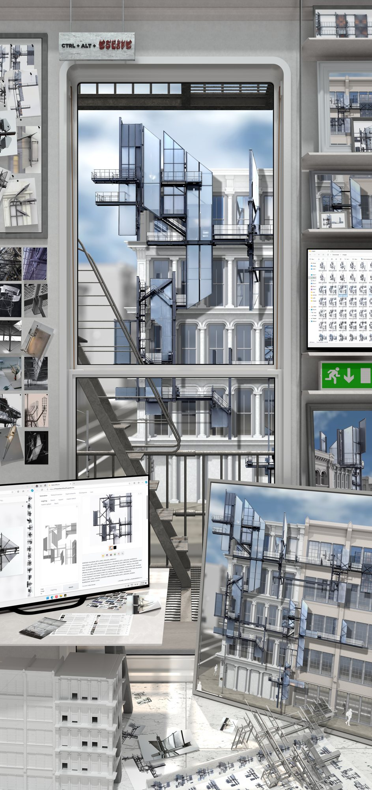
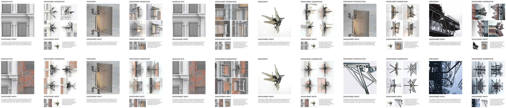

Master’s thesis · RMIT University · 2024
Who is the author when AI becomes part of the design process?

My Master of Architecture thesis explored authorship in AI-assisted design through the fire escapes of SoHo’s Cast Iron District in New York. It asked how these familiar structures could become expressive architectural additions, and how the decisions behind AI-generated design could remain visible.
I used architectural precedents to inform a process of generation, selection and refinement. AI supported the exploration of form, while my decisions guided which ideas were developed and how they related to the existing buildings.
The project focused on transparency and traceability: showing how references, prompts and design decisions influenced the work. This made the relationship between human intention and machine-generated output part of the project itself.
The resulting studies reimagined fire escapes as additive architectural interventions, exploring their visual and spatial potential beyond their familiar functional role.